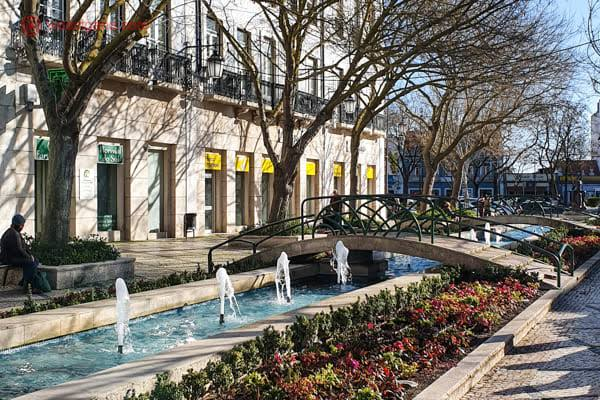
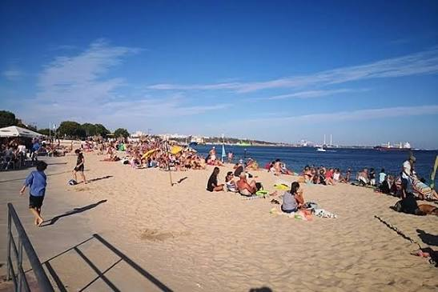
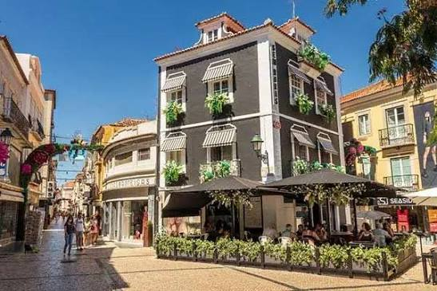

Oceano Profundo
A imensidão do mar

Beleza Inigualável
Descubra os encantos da nossa cidade
Beleza Natural
Efeito de ilusão de profundidade ao fazer scroll
Galeria de Fotografias



Vídeo Aéreo
Poesia da Cidade
Setúbal, cidade bela,
Junto ao rio e ao mar,
És a mais linda aguarela,
Onde eu gosto de morar.